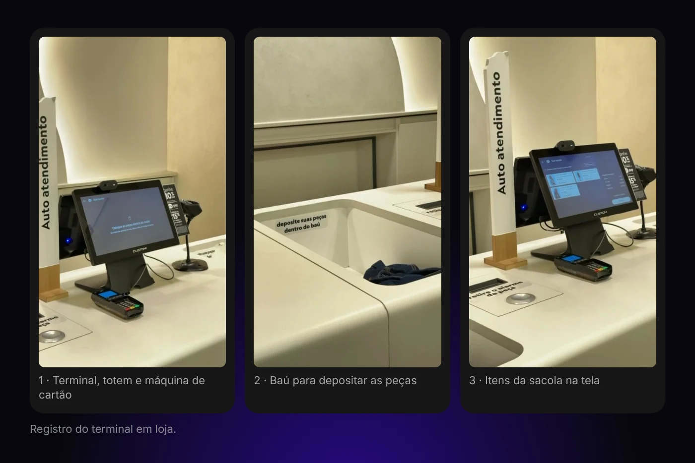
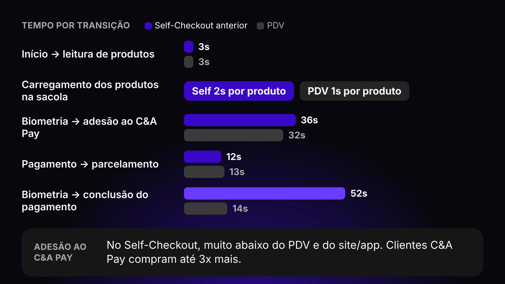
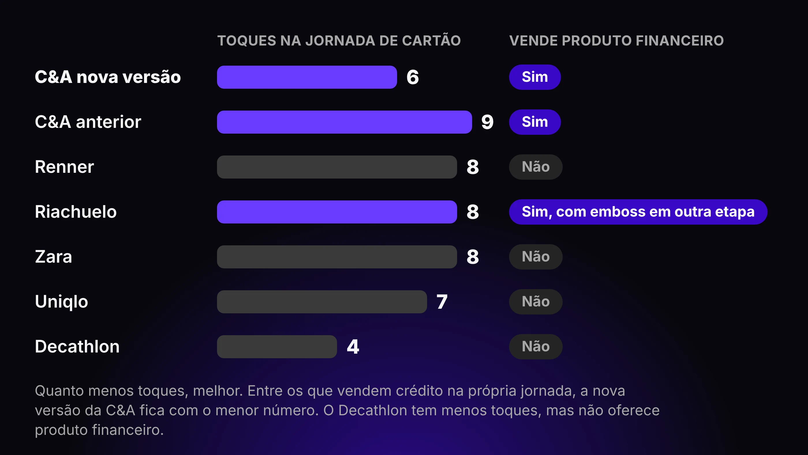
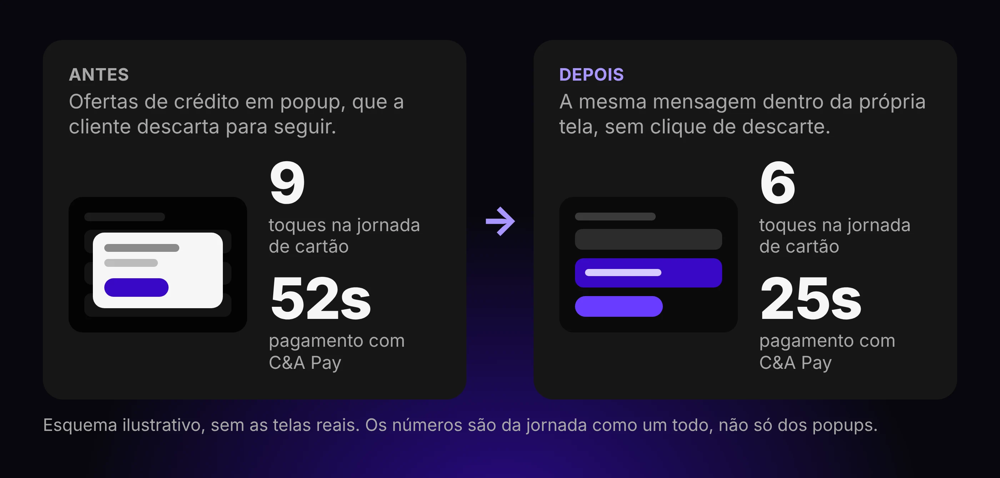
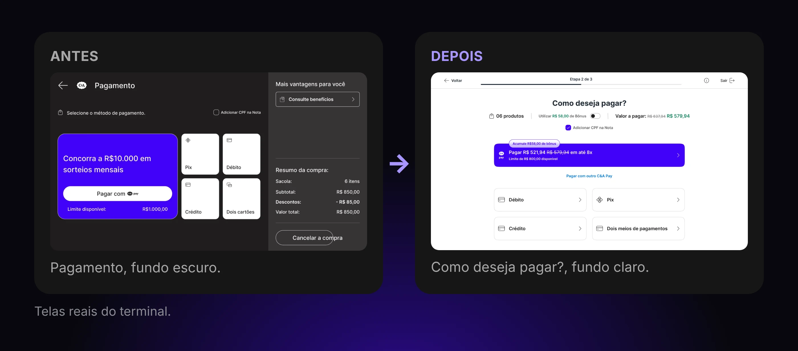
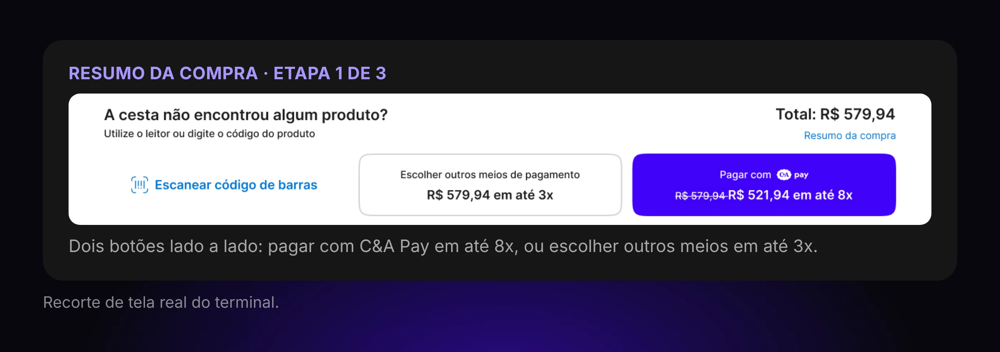
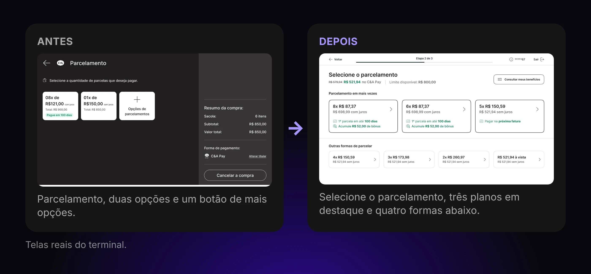
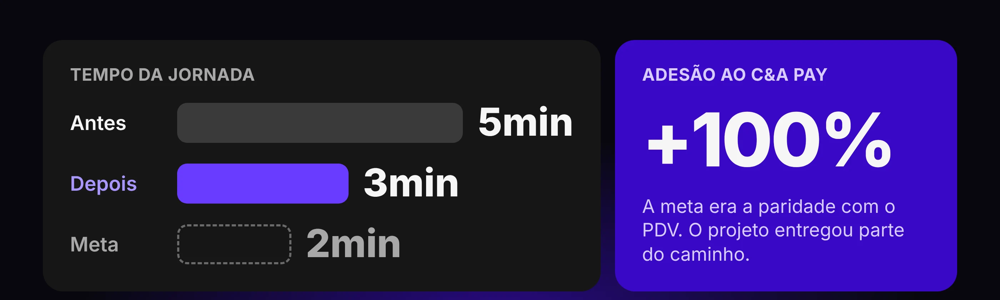

Contexto
O Self-Checkout é uma solução de autoatendimento de pagamentos implementada em loja, rodando sobre um PDV híbrido: na frente, uma tela que o operador de caixa usa para processar pagamentos e que, na ausência dele, carrega a interface de self-checkout para que a própria cliente pague suas compras.
Mas ele não é apenas uma ferramenta de eficiência operacional, e sim também um canal de venda de serviços. Adesão ao C&A Pay, planos de pagamento com juros (PCJ), cashback e benefícios exclusivos precisam caber em uma jornada que, por definição, deveria ser curta.
Some-se a isso o perfil de quem opera a máquina: clientes na faixa de 50+, sozinhas, em um ambiente de loja naturalmente escuro.

Meu papel
Atuei como responsável de jornada em um time com 2 Product Designers Sêniores, sob condução do Gerente de Experiência, que reportava diretamente ao Vice-Presidente de Operações.
O projeto não tinha PM nem PO — o gerente acumulou o papel de produto e o time de tecnologia converteu o resultado em user stories depois. Na prática, isso significa que as regras de negócio e as decisões de escopo passavam por mim antes de virar tela.
Além do desenho da jornada, conduzi as negociações com quatro frentes de interesses distintos: o negócio do C&A Pay, Operações de Loja, Tecnologia e Benefícios/PCJ. Foi ali que os trade-offs entre meta financeira e meta de tempo foram efetivamente decididos, e todo esse processo aconteceu em 4 semanas, do diagnóstico à entrega.
Problema
A eficiência operacional de loja precisava aumentar consideravelmente depois de mudanças significativas no modelo de quadro operacional. O Self-Checkout já era um modelo comprovado e utilizado por boa parte da rede, mas falhava justamente onde deveria ser mais forte.
Havia uma demora considerável no carregamento de telas e serviços, o que tornava mais lenta uma jornada que deveria ser mais rápida do que a do próprio PDV. Em paralelo, a adesão ao C&A Pay no canal estava muito abaixo do PDV e do site/app, uma perda relevante já que clientes C&A Pay compram até 3x mais do que clientes sem cartão.
O diagnóstico cruzou tempo de processamento por tela, números de adesão por produto em Self vs PDV vs Site/App e heurísticas de usabilidade. Dele saíram as três metas do projeto: reduzir a jornada de 5min para 2min, atingir paridade de adesão de cartões com o PDV e paridade de adesão de PCJ com o PDV.

Benchmarks
Estudei Uniqlo, Zara, Renner, Riachuelo e Decathlon em busca de três camadas de informação: soluções visuais, prateleira de funcionalidades e métricas de serviço. Uniqlo foi nosso padrão-ouro de experiência, por ser uma solução madura já implementada em diversos mercados internacionais.
O estudo trouxe insights importantes sobre a jornada de crédito: o uso de uma solução sem plástico é exclusivo da C&A e nenhum dos players aplica uma jornada de adesão ao crédito integrada ao fluxo de compras. Isso traz um desafio interessante — como integrar duas jornadas consideravelmente complexas, sendo que uma delas é feita via oral pelo operador de caixa?
Ou seja, não havia referência de mercado justamente onde o problema era mais difícil. O que dava para extrair do Uniqlo era o princípio de ultrassimplificação da operação, e minha decisão foi aplicá-lo a um território que nenhum outro player tinha enfrentado.

Decisões de design
Tirei a venda de crédito dos popups e a coloquei dentro do fluxo
Mapeei todos os pontos de interrupção que haviam sido inseridos na jornada ao longo do tempo e encontrei um padrão: cada um deles beneficiava a jornada financeira em detrimento do progresso da compra, quase sempre na forma de um popup.
Optei por reposicionar textos e ofertas dentro das próprias telas, preservando a mensagem comercial sem cobrar da cliente um clique de descarte. Em uma jornada cronometrada, o popup é o formato mais caro que existe.
A alternativa descartada foi manter os popups e buscar o ganho de tempo apenas no back-end. Ela resolveria o carregamento, mas não a interrupção percebida, que é o que de fato faz a jornada parecer longa.

Criei uma classe "Operações em Loja" no Design System
O ambiente de loja é naturalmente escuro e a cliente típica está na faixa de 50+. Em vez de tratar isso como um ajuste pontual das telas do Self-Checkout, criei no Design System uma classe dedicada a Operações em Loja, com fundo claro, tipografia grande e alto contraste.
A razão é que o sistema vigente foi calibrado para telas pessoais, seguras na mão, com o usuário escolhendo a distância de leitura. Um terminal fixo em loja é outro problema de legibilidade e merecia uma regra própria.
A alternativa descartada era aplicar overrides caso a caso. Funcionaria naquelas telas, mas criaria uma divergência silenciosa do sistema e não serviria aos próximos produtos de loja que viessem depois.

Dei ao C&A Pay um caminho próprio na tela de resumo
Na tela de resumo do pedido, depois da leitura das peças, a conclusão da compra passou a oferecer dois caminhos: um botão para os demais métodos de pagamento e um botão exclusivo do C&A Pay.
Esse segundo botão identifica automaticamente se a cliente é pré-aprovada, se o limite cobre a compra e qual benefício ela recebe naquela compra específica. Com isso, a oferta de crédito deixa de ser uma pergunta no meio do caminho e passa a ser uma porta de saída — quem quer apenas pagar segue reto, quem tem uma boa oferta vê o valor antes de decidir.
Quando a cliente escolhe os demais métodos, o C&A Pay continua destacado com o benefício correspondente, e é nessa tela que o cashback, exclusivo de compras com o cartão, pode ser aplicado. Descartei o desenho com botão único de pagamento seguido da tela de seleção, porque ele empurrava a oferta para mais um passo e a diluía entre os demais meios.

Troquei instruções ilustradas por vídeo real da operação
A cliente do Self-Checkout não opera apenas uma interface, mas também uma máquina complexa: precisa posicionar as peças no baú para a leitura por RFID e remover a bolacha antifurto, etapa que uma jornada autosserviçada frequentemente não cumpre.
Por isso, toda instrução de operação física passou a exibir um vídeo real em drawer, no lugar das imagens estáticas que existiam antes. Chamamos isso de jornada phygital, em que metade da tarefa está na tela e metade no mundo físico.
A imagem estática obriga a cliente a traduzir um desenho em um gesto, enquanto o vídeo entrega o gesto pronto. Foi a forma mais direta de atacar a etapa da bolacha antifurto, que era a maior dor da jornada.
Reconstruí a tela de parcelamento, a mais difícil da jornada
Os planos de pagamento são personalizados por cliente e por loja e carregam regras distintas entre si: limite extra para planos PCJ, cashback adicional e carência de pagamento em determinados planos, que pode chegar a 180 dias em vez da fatura vigente.
Era muita regra para uma tela que não podia custar tempo. A saída não estava em simplificar a oferta, já que ela é a alavanca comercial do canal, mas em absorver a complexidade dentro do componente — criei cards capazes de acoplar mais informação por unidade, botões que comunicam preço de forma mais agressiva e uma nova tabela totalizadora.
A alternativa óbvia seria reduzir o número de planos exibidos, mas ela foi descartada porque encurtaria a tela ao custo direto de receita.

Validação em loja
Nenhuma cliente vai afirmar em um teste que prefere determinada solução de adesão ao crédito, e seria inocente desenhar um teste esperando esse tipo de resposta. Mas clareza de operação e facilidade de avanço entre tarefas eram pontos que precisavam ser validados antes de a solução subir.
O teste foi feito em loja, em um iPad com resolução e tamanho similares aos do PDV real, com clientes recrutadas na saída do caixa. O recrutamento cobriu os dois perfis que importavam: quem já tinha aderido ao C&A Pay e quem ainda não.
O escopo foi deliberadamente estreito — não testamos a jornada de adesão, e sim se estava claro onde clicar, se a posição de cada elemento tinha lógica e se as informações faziam sentido. Os resultados foram positivos, indicando clareza de operação e de seleção, além da percepção de uma jornada mais rápida e com menos decisões a tomar.
Resultado
A implementação reduziu o tempo de jornada de 5min para 3min, combinando otimizações de back-end com as novas soluções visuais, que diminuíram a carga de informação carregada por tela. A adesão ao C&A Pay no canal aumentou 100%.
As metas originais eram mais duras — 2min de jornada e paridade completa com o PDV — e o projeto entregou parte desse caminho. As melhorias seguintes já estão mapeadas e, pelas projeções, devem fechar a diferença.

Aprendizados
A maior mudança que eu faria não é de design, e sim de infraestrutura de implementação. Os serviços de integração já existiam e apenas o front precisava ser atualizado, então garantir desde o início que testes A/B pudessem rodar de forma simples teria mudado a natureza das decisões — em vez de sustentar cada uma na negociação, eu teria dados para arbitrá-las.
Isso passa por telemetria com precisão de operação, com eventos reportados por cada elemento visual e não apenas por tela. Sem esse nível de granularidade, dá para saber que a jornada encurtou, mas não exatamente qual decisão a encurtou.
Há ainda uma melhoria de hardware que só ficou clara com a operação rodando: o sistema de RFID precisa permitir recarregar os produtos sem reiniciar a jornada. É o tipo de restrição que não aparece no desenho da tela, mas define o custo real de um erro para a cliente.